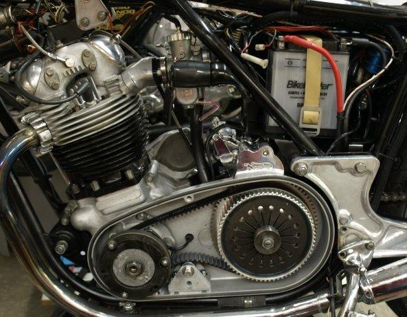
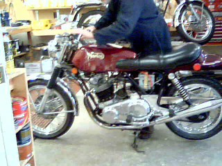
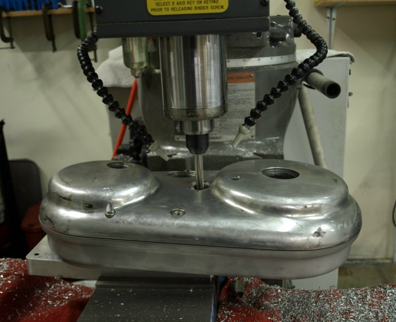
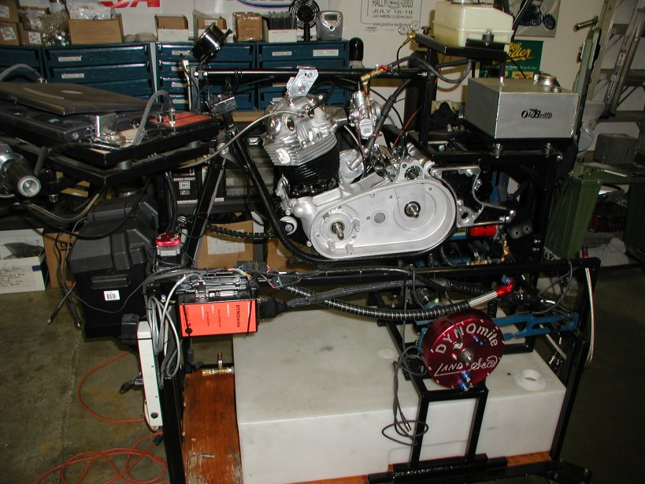

09/20/11
We have sold over 30 Commando starter conversions with good feedback from our customers. Due to the initial cost to produce another batch of components for more starter conversions and the fact that there are other starter conversions available, we have decided to no longer produce Commando starter conversions. Therefore we do not have any more conversions available. We are leaving the following documentation on our site so customers can see what was involved with our starter conversion. The pricing is current and if someone is a machinist and wants to build their own starter conversion, contact us for some of the parts we still have in stock.
Things to consider before deciding on purchasing this starter conversion.
- The stock battery box will not allow clearance for the starter motor. The 1972 through 1974 battery box will work with some modifications. We can modify your existing 1972 or later battery box (see 38-600208).
- You cannot run the stock air box, since the rear air box plate has to be modified as described in the link above. Depending on the type of carburetor(s) you are using, we have several K&N air cleaners that will work and are actually better than the stock paper air cleaner.
- Your inner and outer primary cases need to be modified.
- You will need to use a larger battery. The MK3 (06-6515 or YB14L-A2) battery will work or the the Shorai Lithium-Iron batteries. See Shorai Batteries for more information..
- We are using the unused button on the stock switch cluster, with the turn signal switch, for our starter button. If you are not using this switch cluster, we have other switch options available.
- The largest counter shaft sprocket that will fit on this conversion is a 21-tooth sprocket. The ratio between the engine drive sprocket on a stock Commando is (26T/57T) or .4561, where the belt drive is (32T/68T) or .4706. This is a slightly higher ratio than stock. What this means is a stock Commando with a 19T gearbox sprocket would cruise at 65mph at 4,140rpm and our belt drive with the same sprocket will cruise at 65mph at 4,012rpm.
We have broken the installation procedure into six logical phases. All six phases of the installation along with detailed pictures are listed in the document Installation instructions for our Electric start conversion for pre-1975 Commandos . This installation document is intended to be used in conjunction with the six check lists Starter Conversion Check Lists. This documentation contains all the steps required to perform the conversion.
We estimate that with a competent Norton mechanic and if all goes well, this conversion can be accomplished in approximately 19 hours or about 2 1/2 days. We put or time estimates at the end of each check list, so you can estimate the time for each step.


We produce the parts required for our starter conversiond in batches of 20 units, which take about three to four months to procure. We will start the production of the next batch when we get down to three conversions. At this time we have seven conversions left of our second batch of starter conversions.
Not all the items listed will be required for every conversion, but we have listed all the items that might be involved in a conversion. The following pricing is current as of 02/12/21.
- Electric Starter Motor, Chrome (38-600101), $290.00.
- Electric Starter Motor, Black (38-600102), $230.00.
- Starter Bracket (38-600201), $243.30.
- Belt Drive and Ring Gear (11-800022/S), DROPPED.
- Engine/Gearbox Cradle (06-5140/S), $475.00.
- Primary Cover (38-600202), $105.00.
- Belt Tensioner (38-600211), $125.14.
- Modify Customers Primary Cases (38-600204), $200.00.
- Modify Customers Swingarm for MK3 Lubrication (38-600206), $125.00.
- MK3 Lubrication upgrade kit (13-100005), $159.49.
- Battery box modification (38-600208),
$232.30.
or modify your battery box and use the Shorai Lithium-Iron batteries. See Shorai Batteries for more information. - Fastener Kit (38-600205), $148.49.
- Wiring Harness (38-600210), $50.00.
Customer comments about our Electric Start Conversion
This starter is based on the original design by Bob Oswald (Quiet Power Drive) that he has developed and sold for a number of years. The QPD starter system was used as the base design for Kenny Dreer on his VR-880 Commandos.
Old Britts has taken the evolution of this starter design a bit further making what we believe to be a fool-proof electric starter for Pre-MK3 Commandos. The improvements to the previous designs are:
- How the starter motor is mounted on the engine cradle. We want to be able to use MK3 engine cradles and provide both right and left hand shifts.
Since the MK3 engine cradle uses fixed centers for the gearbox mountings, we had to use the MK3 positioning for the gearbox top bolt.
The MK3 engine cradle provides several benefits over the preMK3 engine cradle:
- Allows removal of the gearbox without unbolting the rear engine bolts.
- A superior way of securing the swingarm spindle with two locating pins instead of the 1/4" top bolt.
- A superior lubrication system for the swingarm bushings.
- Better oil sealing.
- Allows for left hand shift conversions.
- The starter bracket has an outrigger bearing built into it. This guarantees proper alignment between the starter gear and the clutch ring gear. We have used a Steve Maney outrigger bearing on our race bikes for years which helps eliminate the flex of the main shaft. The counter shaft sprocket and clutch assembly are cantilevered off the sleeve gear bearing in the gearbox. Placing a bearing between the counter shaft sprocket and the clutch helps eliminate a lot of the causes for main shaft flexing. We have found that bikes with outrigger bearings shift better due to reduced main shaft flex.
- A one-piece starter bracket milled from billet aluminum. We are currently using 7075 aircraft aluminum for our brackets.
- The inner primary cover fits around our starter bracket and is secured to this bracket.
- We have developed a new belt drive system that incorporates a redesigned ring gear.
The features this new drive system provides us are:
- A clutch basket that uses the standard Commando drive and friction plates that are available from almost any Norton dealer.
- The factory clutch locking tool (06-1015) works with our clutch basket.
- A one piece backing plate bolted to the inside of the clutch basket.
- A drive belt that is commonly used by most of the popular belt drives.
- A thicker ring gear that has the bolt holes CNC drilled to eliminate the runout between the ring gear and the clutch basket.
- A belt tensioner to be able to adjust the belt tension due to having fixed centers on the engine cradle and starter bracket. The belt tensioner also slightly wraps the belt around both pullies which puts the belt in contact with more teeth on the pullies. The tensioner also makes installation of the drive belt a snap and guarantees proper belt tension.
This starter has been mounted on our engine dyno and used to start a freshly built Combat, 10 to 1 compression, engine. The starter turned over the engine with ease, almost like the spark plugs had been removed. We have well over 300 starts on the new ring gear and it does not show any signs of wear. We are in the process of testing our starter on a 1972 Commando.
Pictures of all parts of this conversion can be found on our Installation instructions for our Electric start conversion for pre-1975 Commandos . The starter motors can be chrome or black. We have some black starters on order and will display them shortly. These starters are the ones used on the Harley Sportster and have proven to be very dependable.
We have a manifold available to address the issue of the placement of the breather body for 1972/73 750 engines that have been modified by Old Britts to fix the oil scavenging problem.
When we have modified the inner primary cover to fit around our starter bracket the center mounting stud pillar has to be removed for clearance for the ring gear and allow a cross shifting shaft if left hand shift is desired. The stock three bolts that screw into the crank cases along with the two starter screws secure the inner primary. The outer primary cover will be altered where the two locating pins fit the two cases together. The outer cover will have the locating pin holes drilled through the case. The inner cover locating holes will be tapped and two allen head bolts will secure the outer cover to the inner cover. Old Britts 1972 race bike with left hand shift has had the two primary covers attached this way since it was built and it has never given us any problems.

The outer primary cover can be modified to accomodate left hand shift. To provide left hand shift, we use the MK3 gearbox covers and cross shaft. The outer primary cover is bolted to the inner cover and mounted on our mill at the correct angle for the cross shaft. We then bore out the outer cover and fit the MK3 shaft bushing. We modify the cross shaft end to fit into the shift lever. At this time this arrangement will only work with rear sets.
Our starter mounted on the Old Britts engine dyno.

Several owners of MK3 bikes have asked if this starter will work on their bikes. The answer is yes and we have one running, but ring gear is too large to fit in the inner MK3 primary cover. We have developed a complete inner and outer primary and will provide pictures and pricing at a later date.
This page was written and designed by F. H. Eaton
& Associates if you have any questions or comments please
contact us at infon@fheaton.com